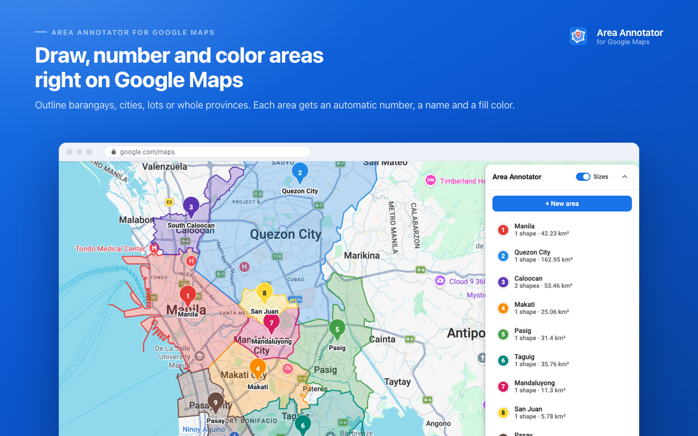
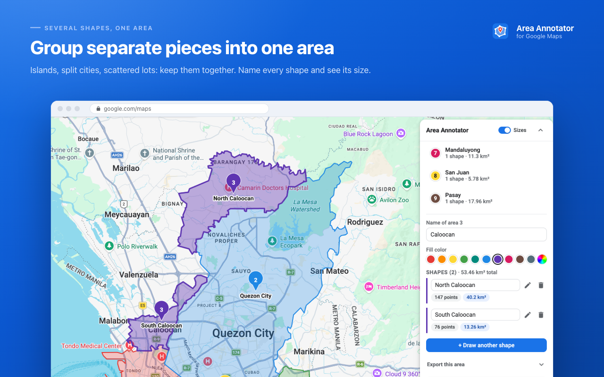
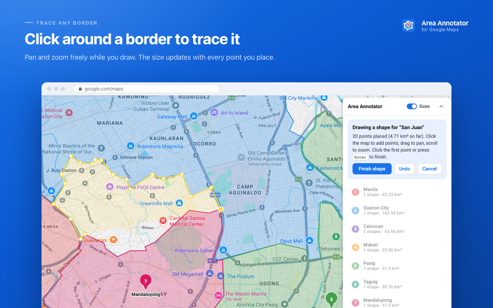
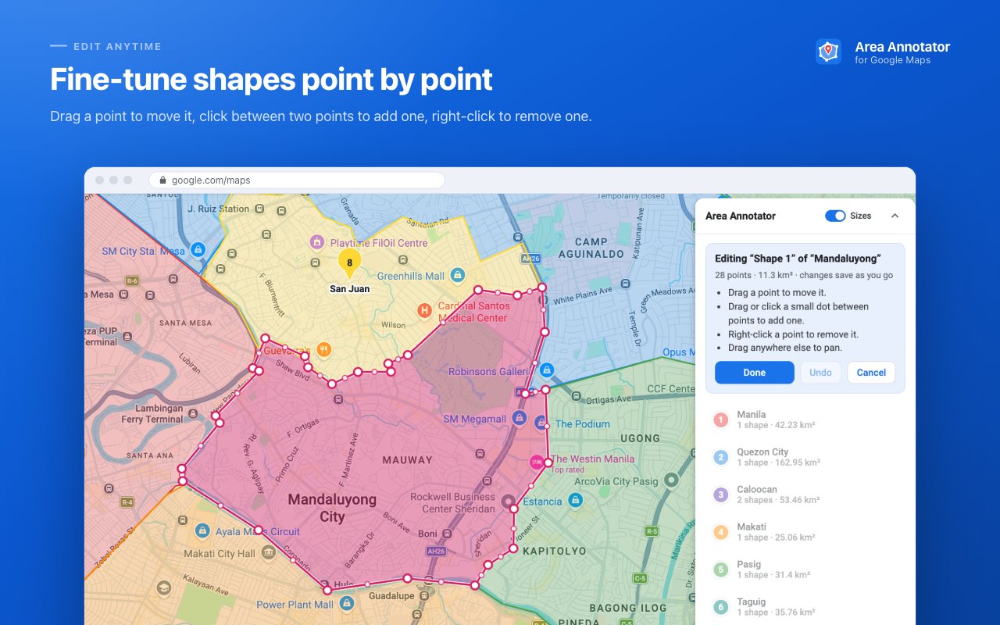
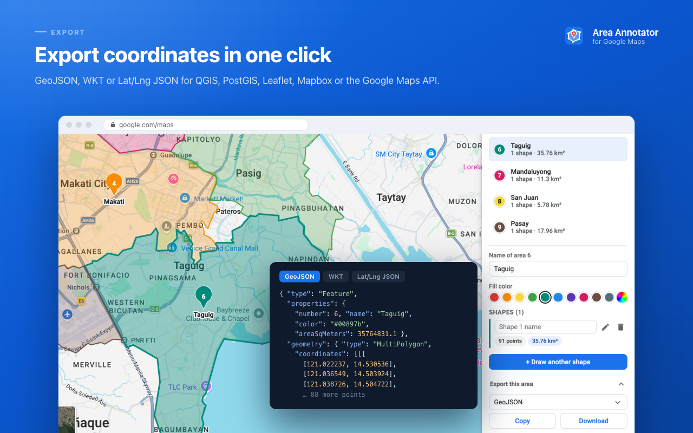

Draw, number and color areas right on Google Maps
Trace barangays, cities, lots, islands or whole provinces, then export the coordinates in one click. No more copying points one by one.
Get the extensionHow it works
What you can do
Draw areas
Click around a border to trace it. Pan and zoom freely while you draw.
Several shapes per area
Keep islands or split cities together in one area, and name each shape.
Numbers, names and colors
Areas are numbered automatically. Pick a fill color and give each a name.
Sizes
See each shape's and area's size in km², hectares or m², matching Google Maps' measure tool.
Edit anytime
Drag points to move them, add points between them, or right-click to remove one.
Export
GeoJSON, WKT or Lat/Lng JSON for QGIS, PostGIS, Leaflet, Mapbox or the Google Maps API.




How it works
- Open Google Maps. The Area Annotator panel appears at the top right.
- Click + New area, then click points around the border on the map.
- Click the first point or press Enter to finish. Backspace undoes a point and Esc cancels.
- Name the area, pick a color, and add more shapes if needed.
- Open Export this area, choose a format, and click Copy or Download.
Works in Map and Satellite view. Shapes are hidden in tilted, rotated or 3D views.
Get the extension
Area Annotator is free on the Chrome Web Store and works in Chrome and Microsoft Edge.
Support
Found a bug or have an idea? Open an issue on GitHub. Please include what you were doing, your browser version, and a screenshot if you can.
Your areas are stored only in your browser. Read the privacy policy.